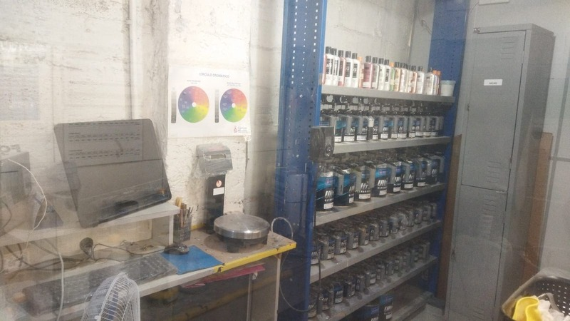
Garantindo o Ajuste De Cor Ideal
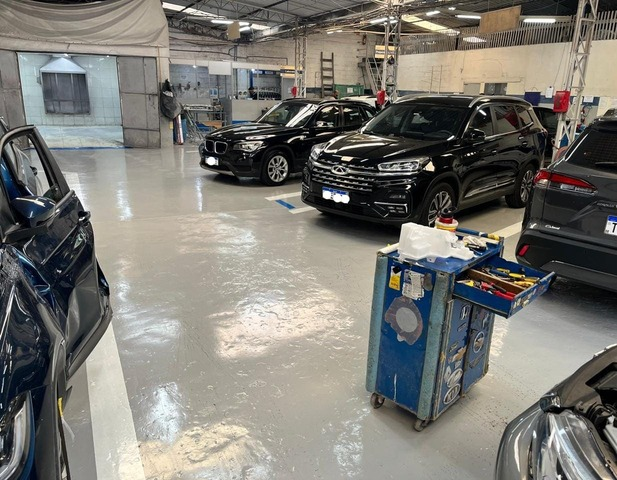
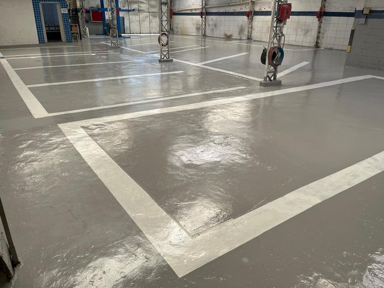
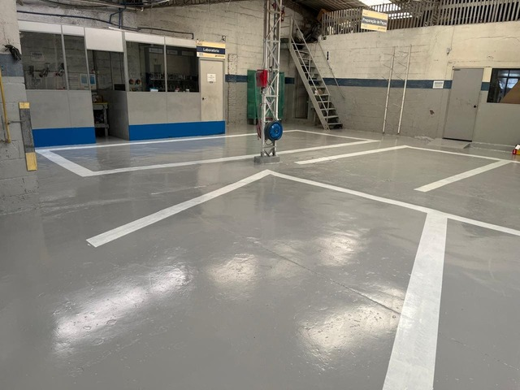
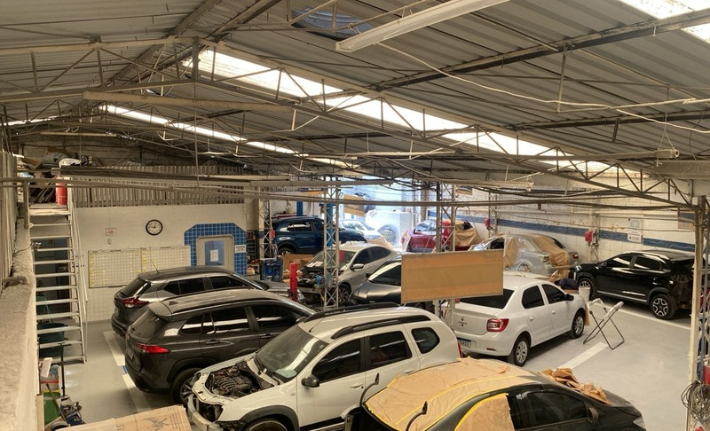
Evitando Contaminação
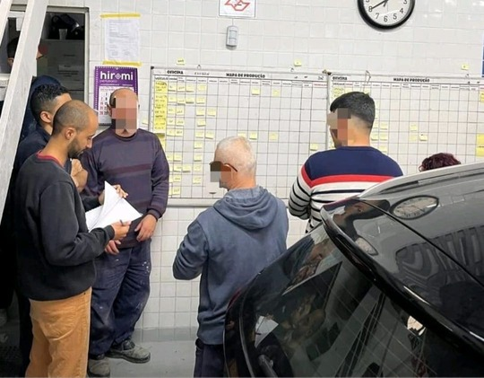
Sobre Cada Veiculo :
- Evitando Atrasos
- Focando Na Qualidade
- Atenção em cada veiculo e cliente
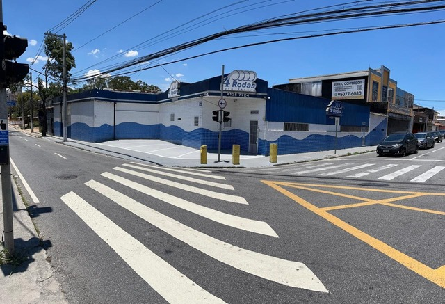
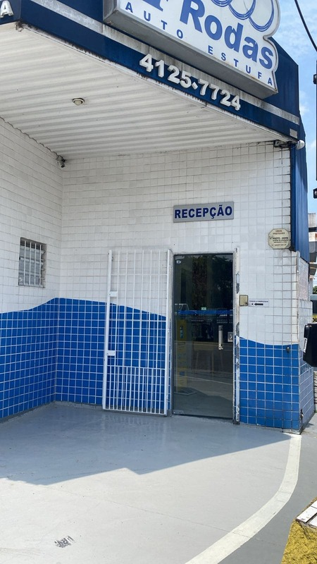
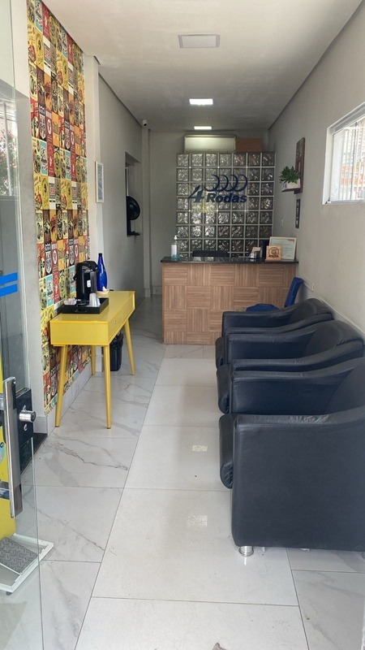
Garantindo o Ajuste De Cor Ideal


Evitando Contaminação
Sobre Cada Veiculo
Somos Oficina Selo Verde
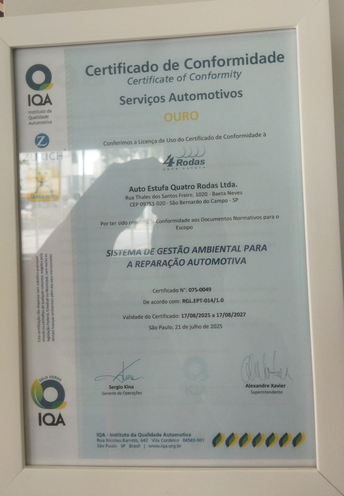
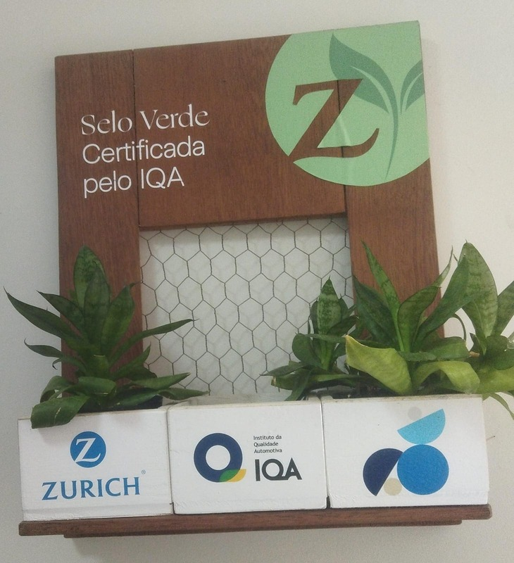
- Reconhecimento IQA: A oficina cumpre os critérios técnicos de conformidade ambiental, sendo uma escolha segura para clientes que buscam sustentabilidade.
- Oficina Certificada IQA Selo Verde: Atesta que a oficina adota rigorosos processos de gestão de resíduos, descarte correto de materiais contaminantes (óleo, filtros, baterias) e uso eficiente de recursos.
Nossas Avaliações No Google
Sobre Nós
Com tradição iniciada em 1988, a Auto Estufa 4 Rodas é referência no setor automotivo. Sabemos que seu veículo é um bem conquistado com amor, e entendemos a frustração de vê-lo danificado. Nosso objetivo é transformar esse sentimento em tranquilidade, provando que é possível extrair uma experiência positiva até de momentos difíceis. Sob a mesma gestão desde 2002 e mantendo o mesmo CNPJ, preservamos a confiança e a transparência que nossos clientes buscam há décadas. Somos oficina referenciada das principais seguradoras do mercado, como:
- Zurich
- Yellum
- HDI
- Santander
- Mapfre
- BB Seguros
- Essor
- American-Life
- Porto Seguro
- Azul
- Itaú
- Sura
- Darwin
sua seguradora não está na lista acima? Não se preocupe entre em contato com a gente, atendemos qualquer seguradora.
Além do atendimento a particulares e seguradoras, somos parceiros e atendemos a frota da locadora Ayvens, garantindo a manutenção e o padrão de qualidade exigidos por grandes gestoras de frotas. Nosso compromisso é com a sua tranquilidade: entregamos excelência técnica e oferecemos garantia em qualquer serviço realizado. Fale com consultor
Fale com consultor